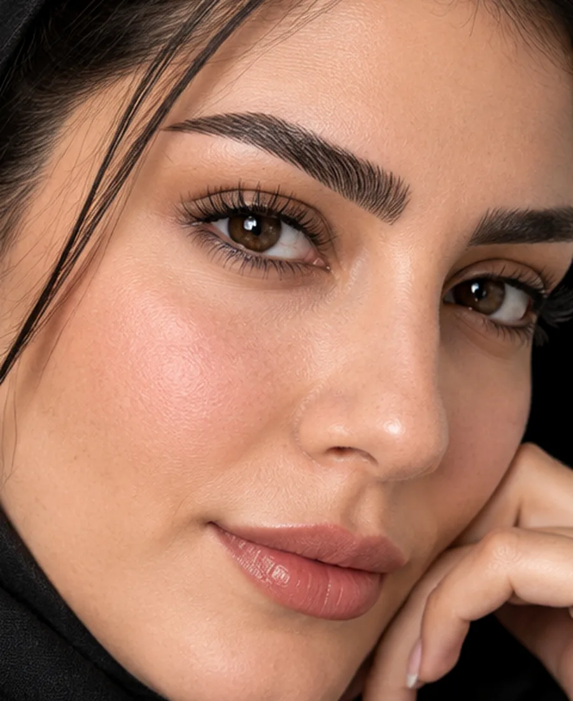
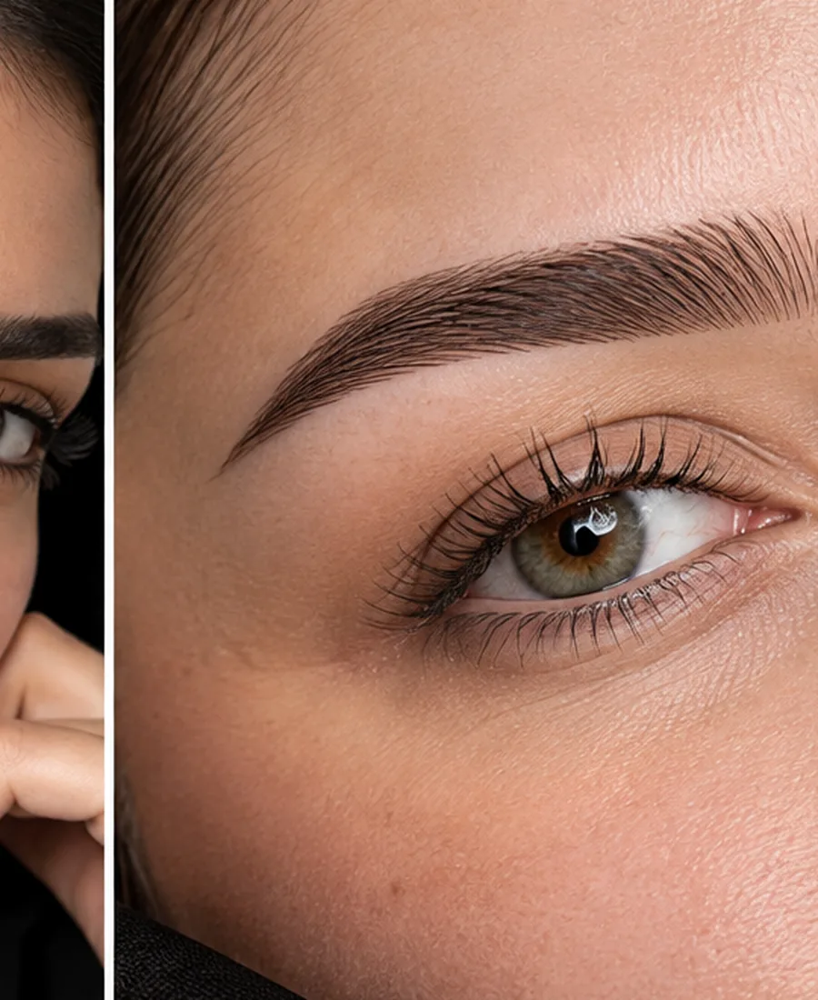
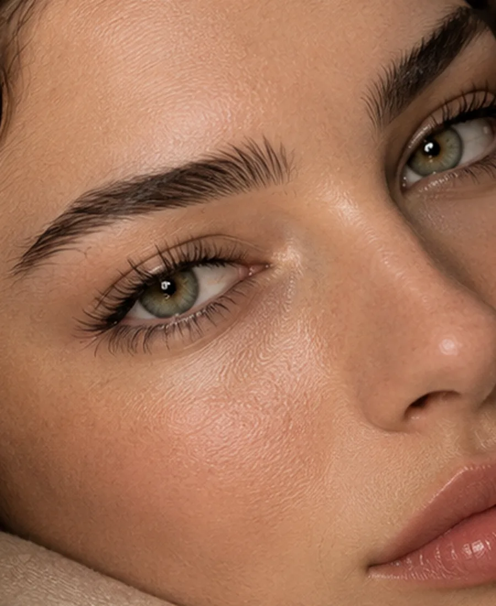

01 / NATURALنچرال امضایی

قبل / شبیهسازیبعد / فرم طراحیشدهبرای ابروهایی که میخواهند طبیعی، ظریف و بسیار سبک دیده شوند.

زیباییِ دقیق، طبیعی و ماندگار
اینجا قرار نیست ابروها شبیه هم شوند؛ فرم چهره، جهت رشد تارها و سبک مورد علاقهات بررسی میشود تا طراحی نهایی بخشی طبیعی از صورتت به نظر برسد.

کار حرفهای از نگاه من از شناخت فرم صورت شروع میشود. قوس ابرو، ارتفاع پیشانی، فاصلهی چشمها، تراکم طبیعی و حتی عادتی که برای حالت دادن ابرو داری، همگی روی پیشنهاد نهایی اثر میگذارند.
هدف این است که بعد از اجرا، ابرو بخشی از چهره باشد؛ نه یک عنصر جدا و سنگین. نتیجه باید از نزدیک تمیز، از دور چشمنواز و در طول زمان هماهنگ با فرم طبیعی صورت باقی بماند.
دستهی وسط را بکش تا تفاوت دو حالت را ببینی. برای اینکه نتیجهی واقعی یک مراجعهکننده جعل نشود، سمت «قبل» در این نمونه یک شبیهسازی آموزشی از همان تصویر است؛ نتیجهی واقعی هر فرد به فرم و شرایط خودش بستگی دارد.

قبل / شبیهسازیبعد / فرم طراحیشدهبرای ابروهایی که میخواهند طبیعی، ظریف و بسیار سبک دیده شوند.

قبل / شبیهسازیبعد / فرم طراحیشدهفضای باز، تارهای رو به بالا و حالتی سبک که صورت را جوانتر و تمیزتر نشان میدهد.

قبل / شبیهسازیبعد / فرم طراحیشدهبرای کسی که هم جزئیات تار را میخواهد و هم کمی عمق و پرشدگی بصری.
نمونههای موجود برای ایده گرفتن و مقایسهی فرمها هستند. هر زمان نمونهکارهای واقعی استودیو آماده شد، همین گالری را بدون تغییر ساختار میتوان با آنها جایگزین کرد.
میکروبلیدینگ یک تکنیک آرایشی برای ایجاد خطوط ظریف و شبیه تار مو در ناحیهی ابرو است. کیفیت نتیجه بیش از هر چیز به طراحی اولیه، انتخاب تناژ مناسب، مهارت اجرا، شرایط پوست و مراقبت بعد از کار وابسته است.
برای همین «طراحی» قبل از «اجرا» قرار میگیرد. قرار نیست یک فرم ثابت برای همه استفاده شود؛ تناسب با چهره اصل کار است.
فرم طبیعی ابرو، تقارن، تراکم، جهت رشد تارها، نوع پوست، رنگ زمینه و سابقهی کارهای قبلی. همین جزئیات کمک میکنند تکنیک و شدت کار بیدلیل سنگین نشود.
اگر دوست داری ابروها مرتبتر و قاب چهره منظمتر دیده شوند، میتوان بر اساس ساختار طبیعی ابرو یک سبک ظریف انتخاب کرد؛ از نچرال و کرکی تا ترکیبی و پودری.
ظاهر اولیه با ظاهر نهایی یکی نیست. پوست در روند ترمیم تغییر میکند و رنگ نیز میتواند در روزهای بعد ملایمتر شود؛ به همین دلیل مراقبتهای بعدی بخشی از فرایند است.
قضاوت دربارهی فرم و تناژ را باید مطابق توصیهی متخصص و بعد از طی شدن روند ترمیم انجام داد. دستکاری، خیس کردن یا محصولات نامناسب میتوانند روی روند ترمیم اثر بگذارند.
انتخاب سبک قرار نیست محدودیت باشد؛ میتوانی از یکی از این زبانها بهعنوان نقطهی شروع مشاوره استفاده کنی.
تارهای ظریف با تمرکز روی حس طبیعی و فضای منفی.
NATURALحالت سبک و رو به بالا برای ابروی پرحضور اما airy.
FLUFFYتار + سایه برای تعادل بین بافت و عمق.
COMBOهالهی سایهای نرم برای قاب مشخصتر و مرتبتر.
POWDERناحیه را دقیقاً طبق دستور متخصص تمیز و خشک نگه دار.
پوستهها را جدا نکن و اجازه بده روند ترمیم به شکل طبیعی پیش برود.
در روزهای اول از محصولات ناشناخته یا فشار و اصطکاک غیرضروری روی ناحیه دوری کن.
برای ارزیابی نهایی، زمان پیشنهادی متخصص را در نظر بگیر.
«جزئیات کوچک هستند که یک طراحی خوب را از یک ابروی صرفاً مرتب جدا میکنند.»
SON GOOL HAMEDفرم زیر بدون سرویس خارجی اجرا میشود. برای نسخهی فعلی، درخواست روی همان دستگاه ذخیره میشود و میتوانی خلاصهی آن را با قابلیت اشتراکگذاری یا کپی برای خودت نگه داری.
انتخاب تکنیک به شرایط پوست، پایهی ابرو، سابقهی کارهای قبلی و سبک دلخواه بستگی دارد. بررسی اولیه برای انتخاب آگاهانه مهم است.
رنگ و فرم قبلی باید دیده شود. بسته به وضعیت موجود ممکن است تکنیک مناسب متفاوت باشد یا ابتدا نیاز به بررسی و اصلاح داشته باشد.
خیر. ظاهر اولیه با نتیجهی ترمیمشده یکی نیست و رنگ و بافت ابرو میتواند در روزهای بعد تغییر کند.
یک یا دو نمونهای که دوست داری ذخیره کن و هنگام مشاوره نشان بده. در نهایت فرم صورت و پایهی طبیعی ابرو بر انتخاب نهایی اثر میگذارند.